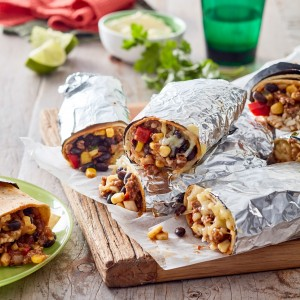

30-minutes beef and rice burritos:

Description:
The following is the process of preparing a simple beef and rice burritos which take 15 minutes to prep and 15 minutes to cook.
Ingredients:
- 1 tbsp. olive oil
- 1 brown onion, finely chopped
- 1 red capsicum, diced
-
2 garlic cloves, crushed
-
500 g lean beef mince
-
1 x 400 g can black beans, drained, rinsed
-
1 x 300 g can corn kernels, drained, rinsed
-
1 x 30 g sachet salt-reduced taco seasoning
-
1 x 200 g jar mild or medium taco sauce
-
2 spring onions, thinly sliced
-
Salt and pepper, to taste
-
1 x 250 g packet 90-second microwave brown rice
-
6 jumbo flour tortillas
-
1⅔ cups (150 g) Perfect Italiano™ Mexican Style cheese
-
Sour cream, to serve
-
Lime wedges, to serve
steps:
-
Preheat oven to 220°C / 200°C fan-forced.
-
Heat oil in a large frying pan over medium-high heat. Add brown onion, capsicum and garlic. Cook, stirring, for 2 minutes or until slightly softened. Add beef. Cook, breaking up with a wooden spoon, for 5 minutes or until browned and cooked through.
-
Add beans, corn and seasoning. Cook, stirring, for 1 minute or until fragrant. Add sauce and spring onion. Cook, stirring, for 2 minutes or until heated through. Season with salt and pepper.
-
Meanwhile, cook rice following packet directions.
-
Heat tortillas following packet directions. Place tortillas on a flat surface. Divide beef mixture along the centre of each tortilla. Top evenly with rice and Mexican Style cheese. Roll up tightly to enclose filling. Wrap burritos in foil. Bake for 5 minutes or until cheese melts. Serve the burritos with sour cream and lime wedges.